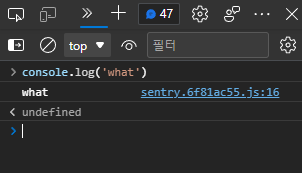

Tips
미분류 팁부터 마땅히 써먹을만한 데가 생각나지 않는(…) 잡지식까지.
class가 랜덤 문자열이에요
트위터에선 거의 모든 class가 다음과 같이 무작위로 되어있다.
<div class="css-1dbjc4n r-1awozwy r-18u37iz r-1h3ijdo r-1777fci r-1jgb5lz r-1ye8kvj r-ymttw5 r-13qz1uu">
</div>
이는 CSS Modules 기법으로 class가 서로 겹치지 않도록 빌드과정에서 무작위로 생성한 것. 다만 부작용(?)으로 확장기능이나 유저스크립트를 만드는 입장에선 웹페이지를 접근하기 난감한 경우가 생길 수 있으며, 주석이라도 안 남기면 뭘 의도한 건지도 알기 어렵다. 내가 만든 확장기능(특히, 미러블락)의 경우 이렇게 생성한 class 사용을 최대한 피하는 편인데, 다행히 트위터에선 class말고 그나마 의미가 있는 속성(data-testid 속성이나 aria-*등 접근성 관련 속성, role 등)이 있다.
- 트윗:
article[data-testid=tweet] - 리트윗 버튼:
div[role=button][data-testid=retweet] - (팔로워 목록 등에서) 유저:
div[data-testid=UserCell]
등등…
트위터 routes 접근
Redux store 접근하는 방법과 비슷한데, 트위터 웹에서 정의된 routes를 보는 방법도 있다.
document.getElementById('react-root')
._reactRootContainer._internalRoot.current
.child.child.child.child.child.child.child
.pendingProps.routes.props.children
트윗덱 신버전 (Gryphon) 프리뷰 진입
쿠키값을 통해 tweetdeck_version=beta로 설정한 후 새로고침한다.
document.cookie = `tweetdeck_version=beta;path=/;domain=.twitter.com;max-age=15768000;secure;samesite`
출처: @Basix1120님의 트윗
트윗덱 console 복구

신버전 트윗덱에선 각종 Console API(console.log, console.warn 등)를 Sentry가 수정했더라. 아주 불편한 건 아니지만 콘솔 호출을 원래대로 되돌리려면 __sentry_original__에 접근하여 바꾸면 된다.
function restoreConsole() {
const methods = ['debug', 'info', 'warn', 'error', 'log', 'assert']
methods.forEach(method => {
if ('__sentry_original__' in console[method]) {
console[method] = console[method].__sentry_original__
}
})
}
유저 ID 링크
트위터 유저의 ID만 알고 로그인네임이나 닉네임 등을 모르는 경우, https://twitter.com/intent/user?user_id=유저ID를 입력하면 해당하는 유저의 프로필이 열린다.
(예: https://twitter.com/intent/user?user_id=2594273106 => 가을별의 트위터 프로필)
트윗링크에서 끝에 붙는 s 파라미터 의미
트위터를 하면서 링크를 복사하면 원래 트윗주소 끝에 ?s=20같은게 붙어있곤 한다. 트위터측에서 공식적으로 밝힌건 아니나 내가 알아낸 정보에 따르면,
?s= |
OS (m5=웹) | 공유수단 |
|---|---|---|
| 01 | android | sms |
| 02 | android | |
| 03 | android | gmail |
| 04 | android | |
| 05 | android | |
| 06 | android | line |
| 07 | android | fbmessenger |
| 08 | android | |
| 09 | android | other |
| 10 | ios | sms |
| 11 | ios | |
| 12 | ios | other |
| 13 | android | download |
| 14 | ios | download |
| 15 | android | hangouts |
| 16 | android | twitterdm |
| 17 | m5 | |
| 18 | m5 | download |
| 19 | android | copy |
| 20 | m5 | copy |
| 21 | ios | copy |
| 22 | ios | snapchat |
| 23 | android | snapchat |
| 24 | ios | |
| 25 | ios | fbmessenger |
| 26 | ios | |
| 27 | ios | gmail |
https://twitter.com/gaeulbyul/status/1352574734102220803
트위터 고급검색 구문
물론 트위터에서도 고급 검색기능은 제공하나, 모든 구문이 다 들어있진 않더라. 여기에 정리가 잘 되어있다: Advanced Search on Twitter
구버전 트위터 화면
트위터에서 React/Redux/… 도입 이전의 UI를 띄울 수 있는 방법이 있다. 바로 User-Agent를 검색 봇(가령, 구글봇 Mozilla/5.0 (compatible; Googlebot/2.1; +http://www.google.com/bot.html))으로 바꾸면 이전버전의 트위터 화면이 나타난다. (다만 실제로 사용할 수 있는 정도는 아니고 그냥 UI를 보는 정도의 의미만…)